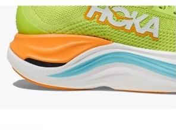
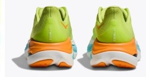

DAILY｜カーボン入り厚底
最も曲がらず、ぶれない。
曲げ剛性28.5Nは、デイリー67足で最も硬い。かかとの幅100.1mmにヒール剛性5で、安定性は5.0点。性能点4.02はデイリー6位である。ただし価格は¥35,200で、コスパ点は2.5にとどまる。
ロング走で脚のぶれを抑えたい人。曲がりにくい靴が好きな人。価格より安定性を取る人。
価格を重視する人。軽い靴が好きな人。足裏で地面を感じたい人。


かかとの幅は100.1mmと広く、ヒール剛性は最高の5。安定性は5.0点である。
ミッドソールにカーボンが入り、曲げ剛性は28.5Nで67足で最も硬い。
前足部のエネルギーリターンは68.5%で67足中7位。一方で衝撃吸収は136SAで21位にとどまり、クッションは3.5点である。
5点満点。計測値を当サイトのルールで点数にしたもの。
安定性5.0、耐久性4.5。クッションは3.5で、厚底の見た目ほど衝撃吸収の数値は高くない。軽さ1.5、スピード3.0、グリップ3.0。
高いほど靴底が曲がりにくい。
摩耗深度から推定した寿命で計算。短いほど安い。
| スカイワード X | ボメロ プレミアム | ペガサス プレミアム | ボンダイ 9 | |
|---|---|---|---|---|
| 価格 | ¥35,200 | ¥29,700 | ¥29,700 | ¥24,200 |
| 実測重量 | 315g | 326g | 308g | 303g |
| 衝撃吸収（SA） | 136 | 173 | 155 | 146 |
| エネルギーリターン前足部 | 68.5% | 64.4% | 68.3% | 60.3% |
| 摩擦係数 | 0.47 | 0.50 | 0.49 | 0.45 |
| 摩耗深度 | 0.8mm | 0.7mm | 1.0mm | 0.9mm |
| 性能点 | 4.02 | 4.36 | 3.99 | 3.80 |
| コスパ点 | 2.5 | 3.5 | 2.5 | 3 |
同じHOKAのボンダイ 9は¥11,000安く、衝撃吸収も146SAと高い。反発と性能点ではスカイワード Xが上回る。ボメロ プレミアムは¥5,500安く、クッションでは大きく上回る。
ドロップは5mm。フォーム硬度36.5ACで、67足の中では硬めのほうに入る。摩擦係数は0.47で、グリップは3.0。摩耗深度は0.8mmで、推定寿命は約700kmある。
曲がりにくい靴は、合う人と合わない人がはっきり分かれる。試し履きでは、歩くだけでなく、軽く走ったときの感覚も確かめたい。
週末のロング走を楽にしたい人の2足目に向く。1足目としては価格が高い。
安定性と曲がりにくさは、デイリー部門の最上位。価格に見合うかは、ロング走での脚のぶれをどれだけ気にするかで決まる。
※本記事は海外ラボ（RunRepeat）の計測データとメーカー公表値、当サイトの計算をもとにした分析です。計測はUS9（約27cm）です。1kmあたりの費用は摩耗深度から推定した寿命での概算です。価格は当サイトの掲載値で、変更されている場合があります。